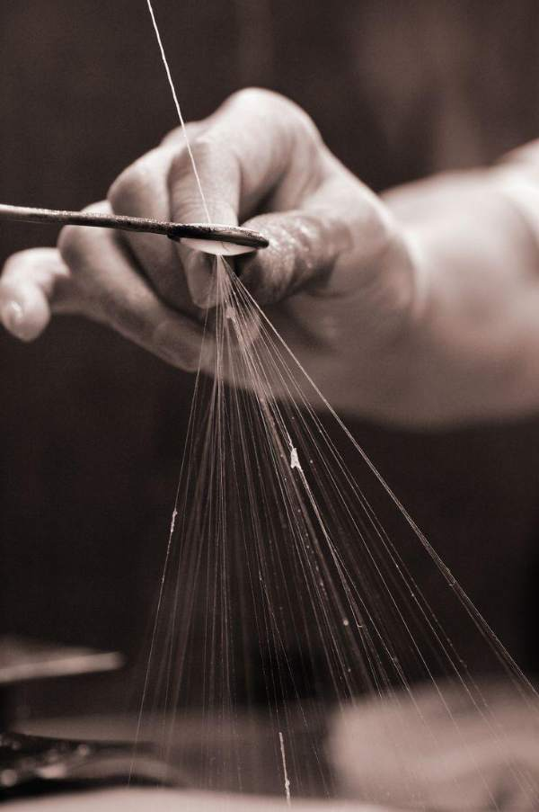
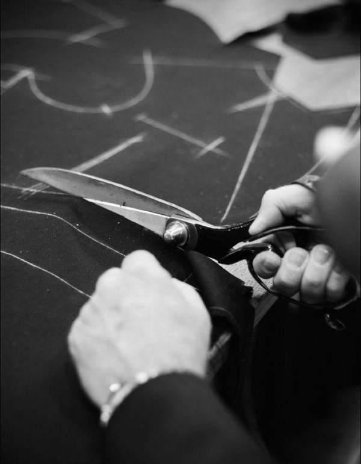
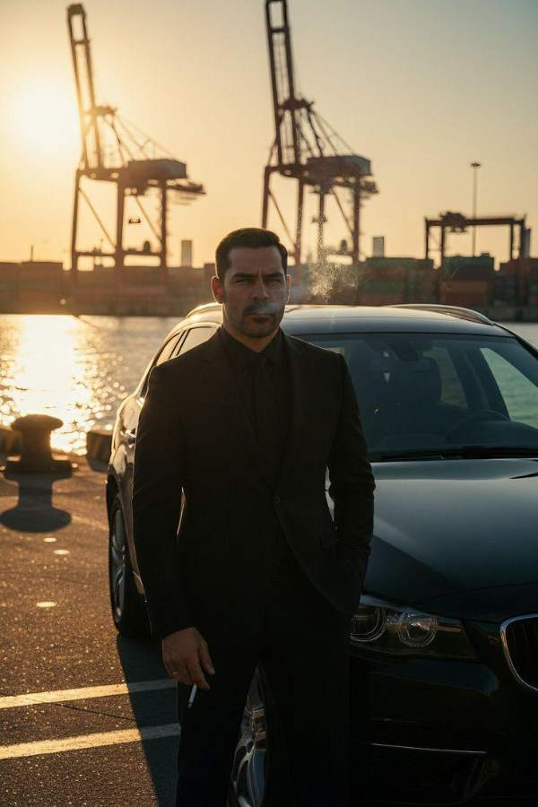

الراجل قدام المراية في فرع جاكامين، والترزي بيظبط الكُم.
صوتصوت الفرع + موسيقى هادية
JAKAMEN × VITALE BARBERIS CANONICO · SHOT BOOK
Shot List كامل للتلات أفلام، لقطة بلقطة، ومع كل لقطة ريفرنس بصري من Pinterest. الملف ده للمخرج والمونتير ومنفّذ الـ AI.
50 SEC · 21 SHOTS · 7 CHAPTERS
بنوقف لحظة القياس في فرع جاكامين، ونرجع بالزمن ورا عشان نشوف رحلة الخامة، وبعدين نرجع لنفس اللحظة بمعنى جديد.
الراجل قدام المراية في فرع جاكامين، والترزي بيظبط الكُم.
صوتصوت الفرع + موسيقى هادية
إيد الترزي بتفرد الياقة، وانعكاس الراجل في المراية.
صوتقصّة مقص، خطوات
الصورة تتجمد والألوان تبهت شوية.
صوتصمت تام
VOThe story didn’t begin here.

خيط يطلع من الياقة، فالبدلة تتفك لقماش، ثم لخيوط، ثم لألياف صوف خام تطير.
صوتReverse Whoosh + صوت خيوط بتتسحب
الألياف الطايرة تنزل على قطيع ميرينو.
صوترياح، أصوات خرفان
VOIt began thousands of miles away, in the hills of Australia.
راعي ماشي وسط القطيع وبيمرر إيده على الصوف بهدوء.
صوتخطوات على العشب
الجز: الفروة بتنزل قطعة واحدة بحركة هادية ومحترمة.
صوتصوت ماكينة جز مكتوم
طاولة فرز: الفروة تتفرد والخبير بيفصل الأجزاء.
VOWhere the finest fiber is chosen by hand.
شعرة صوف واحدة قدام النور.
VOBecause the right fiber is never an accident.
EVERY GREAT SUIT HAS AN ORIGIN.
بالة صوف بتتقفل وعليها ختم شحن.
صوتختم، ربط حبال
طيارة بتقوم، ثم Overlay لخط ذهبي على الخريطة من أستراليا لإيطاليا.
صوتمحرك طيارة يتحول لموسيقى
Biella عند سفح جبال الألب.
صوتأجراس بعيدة
VOTo Biella, Italy.
بكر غزل بتلف.
VOWhere Vitale Barberis Canonico has woven cloth since 1663.
خيوط النول والنقشة بتتكون.
صوتإيقاع النول متزامن مع الموسيقى
فاحص بيمرر إيده على القماش فوق طاولة إضاءة.
VITALE BARBERIS CANONICO · EST. 1663

علامات طباشير، ثم مقص بيقص القماش.
VOThen, in skilled hands, the cloth becomes a suit.
إبرة بتخيط الياقة والـ Canvas.
صوتصوت الإبرة
دفعة بخار كي على جاكيت على المانيكان، والمانيكان يلف ويتحول لنفس مكان الراجل قدام المراية.
صوتبخار، ثم صوت الفرع يرجع تدريجيًا
FROM CLOTH TO FORM.
الـ Freeze يتفك، والحركة والصوت يكملوا من مكان ما وقفوا.
صوتصوت الفرع
يقفل الزرار، يبص في المراية، ابتسامة خفيفة، ثم لقطة قريبة للقماش على الكتف.
VOIn this suit, every thread is a work of art.
البدلة كاملة، ثم شعارا جاكامين وVBC.
VOJakamen. With Vitale Barberis Canonico.
40 SEC · 13 SHOTS · 5 CHAPTERS
يوم واحد بين العربية والشارع والاجتماع والمصنع. الناس حواليه بيتأثروا بالجو، وهو ثابت ومتماسك طول الوقت.
شعرة صوف وعليها خطوط Scan رقمية خفيفة.
صوتDigital Hum
VOLong before AI learned to adapt…
الشعرة تتحول لنسيج، والكاميرا ترجع لورا لحد ما يبان إنه قماش كتف البدلة.
VO…nature had already mastered it.
BEFORE AI, NATURE KNEW.
جوه العربية بيراجع ورق، والجو بارد.
صوتصوت تكييف
CAR · 18°C
الباب يتفتح والشمس تضرب، يمشي في الشارع بالجاكيت. في الخلفية واحد شايل الجاكيت على إيده وبيتهوّى.
صوتزحمة الشارع
VOFrom the cold of the car to the heat of the street.
STREET · 37°C
يدخل اللوبي البارد على طول لاجتماع، ويشرح وهو واقف بثقة.
صوتالباب يقفل، هدوء
VOFrom the meeting room…
OFFICE · 21°C
لابس خوذة وفيست أمان فوق البدلة، طالع سلم معدن ومعاه مهندس. المهندس بيمسح عرقه، وهو بيشاور على الماكينة.
صوتماكينات
VO…to a long day on site.
SITE · 32°C
ثلاث حركات: إيده تمتد لسلام، يركب العربية، يقعد ويقوم. القماش بيتحرك معاه.
صوتإيقاع الموسيقى يعلى
ONE DAY. FOUR CLIMATES.
نور وهوا بيعدوا من بين خيوط النسيج، وثنية في القماش بترجع لمكانها.
صوتنفَس خفيف
VONatural wool breathes, manages moisture, and helps the suit keep its shape.
آخر اليوم والبدلة لسه مظبوطة، يقفل الزرار وهو ماشي.
صوتخطوات

يرجع للعربية، يظهر آخر رقم على الـ HUD وبعدين الـ HUD يختفي.
صوتموسيقى تهدى
VOSo all you focus on is your day.
البدلة كاملة، ثم شعارا جاكامين وVBC.
VOJakamen. With Vitale Barberis Canonico.
35 SEC · 13 SHOTS · 4 CHAPTERS
كرسي واحد على رأس الطاولة فاضي، والكل مستني. التفاصيل بتسبق الوش، والاحترام بيوصل من الهدوء مش من الاستعراض.
قاعة اجتماعات و8 أشخاص قاعدين، كل الكراسي مليانة ما عدا الكرسي اللي على رأس الطاولة.
صوتهمهمة، ورق بيتقلب
VOIn every meeting, there is one seat.
الكرسي الفاضي، وقدامه فولدر جلد مقفول وكوباية مية محدش لمسها.
صوتتكة ساعة
VONot the first one taken. The one reserved.
واحد يبص في ساعته، وواحد تاني يبص ناحية الباب.
صوتالهمهمة تقل لحد الصمت
الكُم وتحته سنتي من كُم القميص، وساعة.
VODistinction is rarely loud.
ثنية الياقة وملمس النسيج.
صوتقماش بيتحرك
بيقفل زرار الجاكيت.
VOIt’s in what you choose, when no one is looking.
الأسانسير يتفتح وخطوات ثابتة في الممر.
صوتإيقاع الخطوات
THE DETAILS SPEAK FIRST.
الباب يتفتح ويدخل بخطوة هادية. ده أول مرة وشه يظهر.
صوتصمت تام
إيماءات خفيفة من الحاضرين، وواحد يزق الفولدر ناحيته. هو يرد بإيماءة.
يسحب الكرسي ويقعد ويظبط الكُم، نفس حركة لقطة 4.
صوتصوت الكرسي
VONot made to be the best seller.
يفتح الفولدر ويرفع عينه، والاجتماع يبدأ.
VOMade for the one who sets the standard.
NOT FOR EVERYONE. BY DESIGN.
الطاولة من فوق وكل الأنظار رايحة لرأس الطاولة.
صوتلحظة صمت
شعارا جاكامين وVBC.
VOJakamen. With Vitale Barberis Canonico.